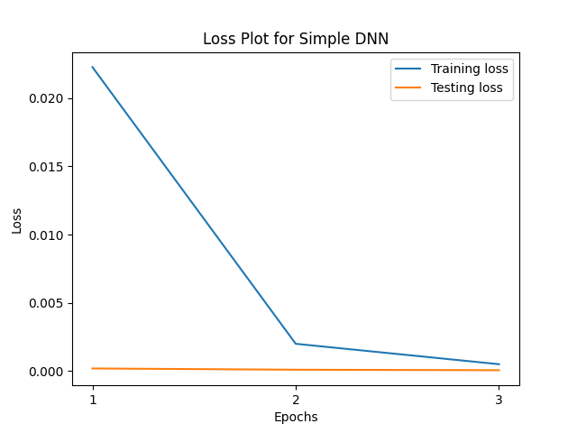

In today's digital landscape, phishing scams have increased the risk for data theft, particularly for those not primed to recognize deceptive emails and advertisements. With vulnerable populations’ risk growing due to new and subtle phishing techniques, effective tools that detect danger before it is too late are required to maintain online safety.
Despite changes in techniques used to get people to click on phishing links, most of these sites share similar features. Understanding what features are effective and if they can be used to detect phishing in a precise and timely manner are crucial for creating useful and effective datasets to improve online safety. We aimed to evaluate the efficacy of the PhiUSIIL Phishing URL Dataset through the effectiveness of its features in determining the legitimacy of a website. We also used this as an opportunity to compare the performance, advantages, and disadvantages of different approaches for models trained and tested on this dataset.
The dataset, which is from the University of California Irvine Machine Learning Repository, includes 134,850 legitimate and 100,945 phishing URLs. It contains 54 features, including categorical and integer data with no missing values.
Features include characteristics like URL length, domain properties, and web page attributes, as well as derived features such as URLTitleMatchScore and TLDLegitimateProb. Class labels distinguish between legitimate (label 1) and phishing (label 0) URLs. The dataset is diverse, containing various languages and top-level domains (TLD) to support well-rounded analysis and training of phishing URL detection models.
Link to the dataset can be found here: PhiUSIIL Phishing URL Dataset
Our first model was a simple deep neural network with a single hidden layer. Prior to being used for training, all categorical data in the dataset was converted to numerical data with the help of the scikit-learn’s LabelEncoder, and the data was normalized using scikit-learn’s MinMaxScaler. 80% of the data was allocated for training, while the remaining 20% was left for testing. The model used a batch size of 64, a learning rate of 0.01, momentum of 0.5, and ran for 3 epochs. The rectified linear unit (ReLU) function was used as the activation function after the input layer and the hidden layer. The loss was calculated using binary cross entropy (BCE) with logits, and the predicted label was determined using binary classification.
Our second model consists of an embedding layer converting token sequences into fixed-size dense vectors, followed by an LSTM layer capturing sequential patterns, and a dense layer using sigmoid activation for binary classification. The LSTM model was compiled with the BCE loss function, Adam optimizer, and was trained with a batch size of 128 for 10 epochs.
For the following three models, we chose the mutual information (MI) feature selection approach to identify the 20 most informative features for classification. We used a basic deep neural network with ReLU for the activation function. This model also consists of multiple dense layers with dropout regularization to prevent overfitting and was trained with a similar set of hyperparameters as the previous model.
Our next model combined CNN & LSTM layers for classification. The MI feature set was used as an input to the model, which begins with an embedding layer followed by a 1D convolutional layer and max-pooling layer. The output was then passed through an LSTM layer for sequence modeling, followed by dense layers for classification.
For our final model, we used a simple RNN for classification. The architecture was identical to the previous model, with the exception of the LSTM layer being replaced by a simple RNN layer.
We found that the first model was the most effective in accurately predicting whether a URL was legitimate or not. It accurately predicted the correct label approximately 99.93% of the time, with the last epoch producing an average loss of 0.000065. The LSTM model was not far behind with a 99.61% test accuracy, but had a substantially higher loss of 0.0217.
| Models | Test Accuracy | Test Loss |
|---|---|---|
| Simple DNN | 99.93% | 0.0001 |
| LSTM | 99.61% | 0.0217 |
| Simple DNN on MI | 98.48% | 0.0534 |
| Hybrid CNN - LSTM on MI | 95.66% | 0.1089 |
| Simple RNN on MI | 95.57% | 0.1102 |
Models utilizing feature selection based on mutual information (MI) showed slightly lower accuracy and increased loss on unseen data. We suspect that training on only 20 features rather than 54 may have limited the opportunity for the models to make more informed decisions. The Hybrid CNN-LSTM model demonstrated a lower accuracy and an almost doubled test loss compared to the next best model, indicating that the combination of convolutional and recurrent layers may not have been the best approach for this task. Likewise, the RNN model resulted in an even poorer outcome, with a 95.57% test accuracy and a test loss of 0.1102.
The impressive results from the simpler first two models go to show that the dataset’s features are meaningful and impactful in determining a website’s legitimacy.
The results from our models indicated that the features present in the PhiUSIIL Phishing URL Dataset are extremely effective for determining whether a website is phishing or not. Though this dataset has proven to be a good starting point, especially in showing the importance of these features, the best opportunity for a balanced model for phishing detection requires an abundance of different and effective datasets.
Additionally, foundational knowledge is crucial in ensuring the most accurate prediction. Complex models may not always be the most accurate, especially if the model does not suit the purpose it is being used for.
A weakness of the dataset is that many data instances may not be completely reflective of a phishing domain that a vulnerable person would fall for, and are instead obvious examples of suspicious links, such as a string of random characters. This dataset does not have as many examples of deceptive website domains that may resemble a trusted source. Including more instances of that nature may improve the detection of the subtle differences between a legitimate and spoofed site.
In terms of future applications, the ability to easily extract these features from websites would be useful to evaluate new examples quickly, especially since some web browsers’ automatic detection systems may not flag less extreme examples of phishing, or even promote them by showing them first as “sponsored” websites. Efficiency in such a tool is crucial so inconvenience does not prevent users from staying safe online.
MS Data Science student at Worcester Polytechnic Institute (2025)
BS/MS Computer Science student at Worcester Polytechnic Institute (2025)
MS Data Science student at Worcester Polytechnic Institute (2025)
BS/MS Computer Science student at Worcester Polytechnic Institute (2025)